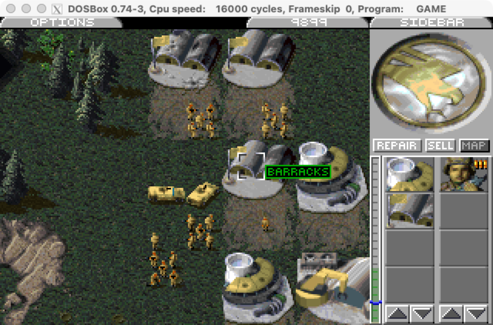

本周阅读材料
教科书
教科书 Operating Systems: Three Easy Pieces:
- 第 3 章 - Dialogue
- 第 4 章 - Process
- 第 5 章 - Process API
- 第 13 章 - Address Spaces
- 第 14 章 - Memory API
阅读理解示例代码
我们的课堂上同样有很多值得大家注意的示例代码，值得大家亲自尝试、调试、观察 trace：
- 建议大家绘制 fork-demo.c 的状态机，这个程序的输出并不 trivial，在你绘制过状态机以后，你会发现你对 “父子进程” 的理解变深了。fork-printf.c 则从另一个方面展示了 fork “状态机复制” 的真正含义——操作系统看不见库函数，因此任何内存，包括库函数中的缓冲区都会被原样复制。
- execve-demo.c 为大家解释了 main 函数的参数是如何而来的。
- 你可以用
thread.h创建更多的线程，并仿照 exit-demo.c 执行系统调用，看如何细粒度地控制线程/进程的终止。
关于进程的地址空间，我们展示了 minimal.S 和静态/动态链接 Hello World 程序的地址空间，请跟随课堂上的演示，亲手去理解进程的地址空间。
- mmap-alloc.c 和 mmap-disk.py 分别展示了用 mmap 分配内存、映射设备的例子。你也可以试着把一个普通的文件，例如 a.txt 使用 mmap 映射并修改。
在我们的 “游戏修改器” dosbox-hack.c 中，我们展示了一些库函数的使用，例如 popen、open 等，以及我们使用了文件 API 在打开的文件中移动 “光标” 从而实现另一个进程的读写。Windows 提供了另一套封装得更好的 API，因此从某种程度上，在 Windows 上实现游戏修改器是更容易的。金山游侠成功的另一个秘诀是可以在游戏中直接唤起而不需要切出，这个实现就类似于游戏外挂 (变速齿轮) 了。你可以参考课堂上的 hooking 代码 dsu.c。
